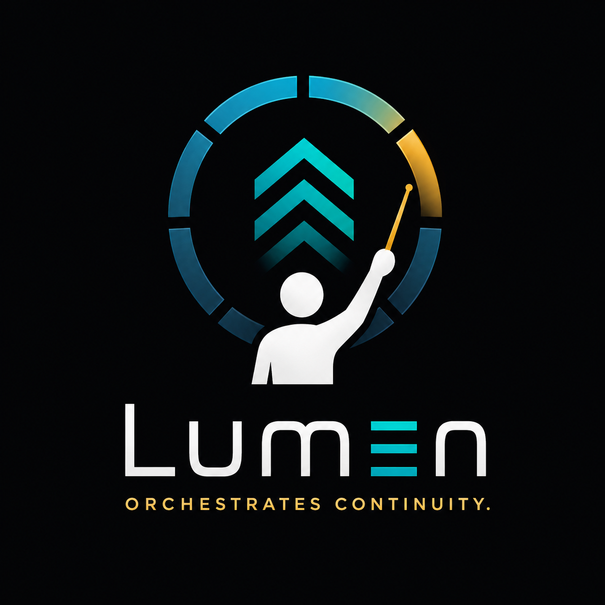

We Illuminate Knowledge
Illuminates.One is an engineering and research company dedicated to making complex software and AI systems more understandable, observable and trustworthy. Through practical engineering and evidence-based research, we explore how knowledge can be preserved, explained and built upon.

From Context Continuity to Understanding AI Reasoning
How a practical engineering experiment became a research platform for observing how language models think.
Sometimes solving the original problem simply reveals a much more interesting one.
The Problem We Set Out to Solve
Lumen did not begin as an ambitious attempt to reinvent artificial intelligence. It began with a practical engineering question. Could a language model analyse a software system significantly larger than its own context window while maintaining a coherent understanding throughout the task?
At the time, this was largely a problem of engineering rather than model capability. Modern language models can reason remarkably well, but their effective working memory remains bounded by context. Once information falls outside that context, it is effectively forgotten.
For anyone attempting to analyse large codebases, lengthy documents or extended engineering tasks, this limitation becomes increasingly apparent. The objective behind Lumen was straightforward: preserve continuity without modifying the underlying model. Rather than attempting to make models larger, Lumen would attempt to make them remember better.
Solving Yesterday's Problem
The first months of development were focused almost entirely on continuity. Checkpoint generation, context reconstruction and orchestration became the core mechanisms that allowed a model to progress through software many times larger than its native context window.
The results exceeded expectations. Large source files could be analysed successfully. Context reductions no longer meant losing the thread of the investigation, and long-running engineering tasks became practical. In engineering terms, the original objective had been achieved.
Normally, that would represent the conclusion of a project. Instead, it became the beginning of another.
The Unexpected Discovery
Something interesting happened once continuity became reliable. The engineering discussions gradually stopped revolving around context windows. Instead, they became conversations about understanding.
As each checkpoint was generated, it became possible to observe something that normally remains hidden inside a language model. Its understanding was not simply growing; it was evolving. Architectural ideas appeared, assumptions were revised, relationships emerged, and earlier conclusions were quietly replaced by better ones as additional evidence became available.
That single shift fundamentally changed the direction of the project.
Beyond Memory
It also became apparent that checkpoints served a much larger purpose than originally intended. Initially they existed simply to preserve continuity across context boundaries. Over time, it became clear that they were preserving something far more valuable than conversation history: the model's current understanding of the problem.
Once viewed through that lens, checkpoint design ceased to be a technical implementation detail and became an architectural concern in its own right. Every checkpoint influenced not only what the model remembered, but also how it continued to reason.
Engineering the Thinking Process
That discovery altered the philosophy behind Lumen. Rather than treating the language model as an opaque component that simply produces answers, Lumen increasingly began treating reasoning itself as something that could be observed, measured and improved.
Questions that would once have been considered impossible to investigate suddenly became engineering problems. How does understanding evolve? Which prompt changes genuinely improve reasoning? Why do some assumptions disappear while others remain? Can different orchestration strategies produce measurably different cognitive behaviour? Perhaps most importantly, can the reasoning process itself become observable?
A Different View of AI Engineering
Many AI systems focus primarily on improving the final answer. Lumen has gradually moved towards improving the journey that produces that answer.
That distinction has influenced almost every architectural decision. Continuity became provenance. Checkpoints became cognitive artefacts. Prompt revisions became controlled engineering experiments. Behaviour became measurable rather than anecdotal. The project evolved from solving a technical limitation into studying how language models operate during extended engineering tasks.
Looking Ahead
Today, Lumen is no longer primarily a solution to bounded context windows. Those experiments answered the question that originally inspired the project. The next phase asks something considerably broader: can long-running AI reasoning become understandable?
Current work is exploring behavioural observability, orchestration policy, prompt optimisation, checkpoint benchmarking and Decision Quality Under Bounded Resources. None of these attempts to make the underlying language model larger. Instead, they aim to make its behaviour more understandable, more reproducible and ultimately more trustworthy.
The Beginning, Not the End
Engineering Digest Volume 1 marks the conclusion of Lumen's first chapter. It documents the transition from proving that continuity could be engineered to recognising that continuity was never the real destination.
The more interesting challenge is understanding how intelligence itself develops over time. That journey has only just begun.